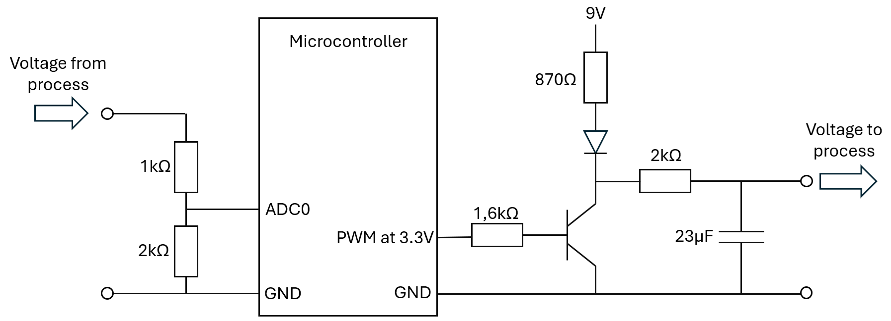
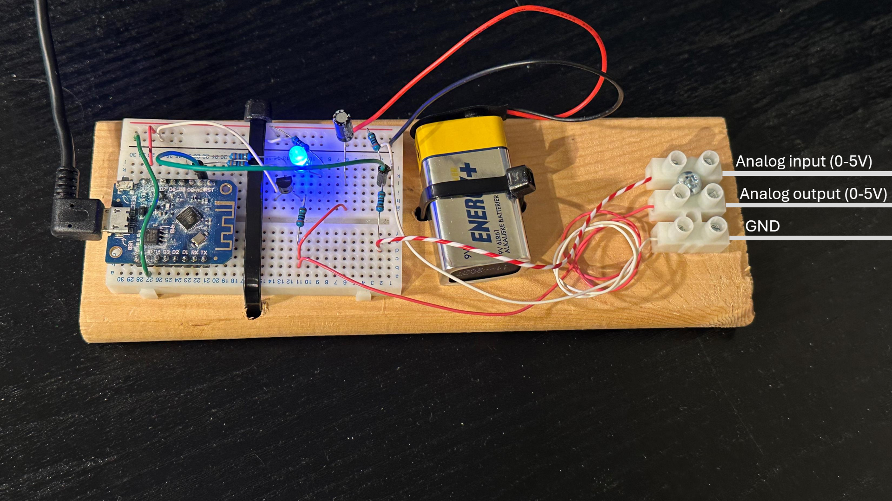
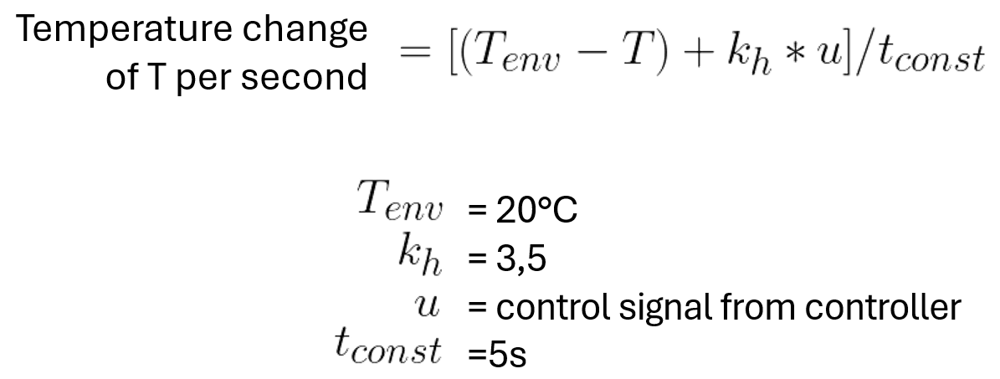
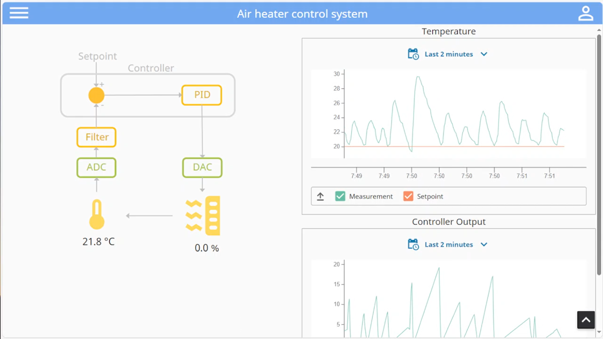
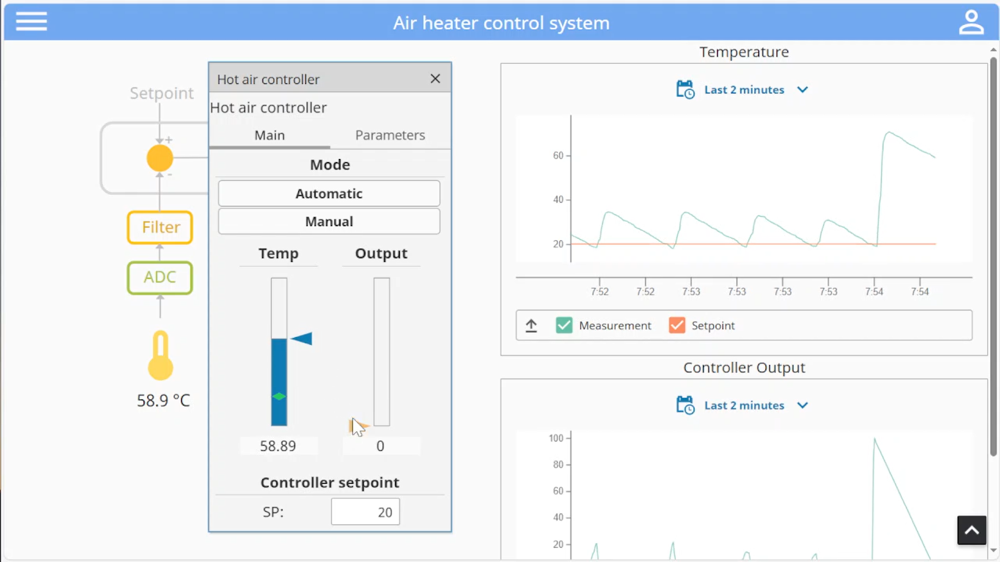
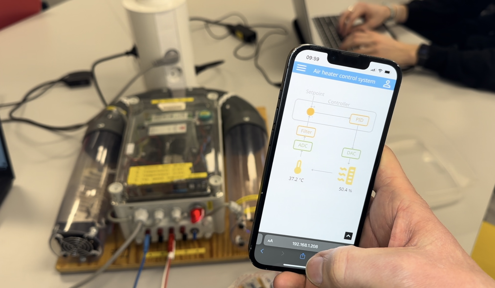

Introduction
Working on «do it yourself” projects (DIY) can be a fun way to learn new technology. When selecting what project to work on, you usually look for something fun and useful like a plant watering system or even a smart home system. Another choice that is equally important is what technology you use, because it can influence time consume, price and the quality of the final result. In this article, we will create a temperature control system using modern and cheap components. The system will include PID control of a heating element, visualization of realtime and historical values in a web browser and transfer of values to the cloud. The project is based on the “Wemos d1 mini” microcontroller and the Ignition SCADA system. These two tools work great together and will be configured to make up a web based control system.
Project goal
This project aims to create a web based control system that controls temperature in an air heater tunnel. The requirements are listed below:
- User interface must be intuitive and good looking.
- User interface must be web-based
- The input/output signals from the air heater are analog voltages. These must be connected to the control system.
- Temperature in the air heater must be controlled and must be stable.
- Data must be sent to the cloud.
Selecting technology
Ignition by inductive automation was selected to be used for creating the user interface for several reasons. Most importantly, it can easily create good looking webpages with live data. This is what Ignition is made for, so it is a perfect fit for our task. Ignition also has a Maker edition that lets hobbyists get a free license. This is also important since DIY projects usually have a low budget.
For the IO-device, the Wemos D1 mini microcontroller was selected due to three main reasons. It is cheap, easily programmable and has built in Wifi. This is actually one of the cheapest microcontrollers that has wifi built in. The downside to using it is that it operates on 3.3V and not 5V and it does not have analog output. The air heater device can only be controlled with 5V analog voltage, so this must be created using electronics (described further down).
To exchange information between Ignition and the microcontroller, some kind of protocol must be selected. Some options that is supported on both sides are serial, MQTT, Modbus TCP, REST API and UPC UA. Modbus TCP was selected because it is simple and fast. The downside is that it does not send encrypted data.
A cloud service had to be selected to receive logged data from the system. Thingspeak was picked because it has a free version, has a simple rest API and gives a nice visualization of the history of the values.
Creating the system
To get the microcontroller functional, it had to be programmed and wired to the analog signals. Since the output from the air heater system (representing temperature) was a 0 – 5V signal, it had to be scaled down to 3.3v. This was done easily and can be seen in the picture below. The airheater also expected a 5v analog signal for controlling the heating element. This was more tricky because the microcontroller did not have analog output and the voltage also had to be increased. The solution was to let the microcontroller send out a PWM signal at 3.3V. this was then converted into a higher voltage by using a 9V battery and a transistor. The signal was then fed into a RC filter to smooth the PWM into an analog voltage.
The RC filter had to be adjusted to get the right time constant. Since the air heater process is a slow process we can use a long filter time constant without affecting the overall system. This results in a smoother voltage. Based on a test with an oscilloscope, the time constant was around 100ms, and the voltage looked very smooth.

The final circuit is shown in the picture below.
The program in the microcontroller does the following tasks in each program cycle:
- Try to reconnect to preconfigured Wifi connection if connection is not up.
- Respond to incoming modbus requests. Can be read or write requests.
- Process the PID controller. This is processed at a fixed interval, so it first checks if enough time has elapsed to do a new calculation.
- Controller output is scaled to a voltage and sent to the heating element.
- The temperature is received as an analog voltage and is filtered in a lowpass filter in the code. This temperature is available for the PID controller the next time it executes.
- The temperature and the controller output is sent to thingspeak.
For convenience, the microcontroller is also programmed with a simulator of the air heater that can be used instead of the real system. This makes it easier to test during development. The simulator was based on the differential equation of the system, shown below.
Ignition was installed on a computer that was available in the same network. Ignition comes with a modbus TCP communication module which was connected to the IP and port of the modbus TCP server on the microcontroller. This let Ignition read and write to float values on the microcontroller.
| Microcontroller variable | Modbus Holding register |
|---|---|
| Temperature (float) | HR0 |
| HR1 | |
| Setpoint (float) | HR2 |
| HR3 | |
| Control signal (float) | HR4 |
| HR5 | |
| Controller P (float) | HR6 |
| HR7 | |
| Controller I (float) | HR8 |
| HR9 | |
| Controller D (float) | HR10 |
| HR11 |
The Perspective module in Ignition was then used to create webpages to display the data. Here, the flex box model was used to create pages that automatically adapted to different screen sizes. For very narrow screens, content was placed vertically instead of horizontally to make a responsive design. Perspective also comes with a powerchart component that displays line charts with historical values. This was used for displaying the temperature setpoint, current temperature and controller output.
A popup in the user interface was made for interacting with the controller. This was used to tune the PID controller.
Thoughts
Ignition is a useful for creating a control system showing live values. However, it must run on a server which must be running at all times. To avoid using a server, one could run the web interface directly on the microcontroller. This would require fewer components, but the programming would be more manual, and the end result would probably not be as good. It would also be interesting to try running Ignition on cheaper hardware like a raspberry pi.
In the system, the PID controller is placed in the microcontroller and not ignition. This is beneficial, because it allows the control loop to continue working if the ignition server is restarted or the wifi network connection is lost.
As long as the modbus TCP communication is sent over a closed and encrypted network, there should be no security concerns.
Conclusion
The final system ended up fulfilling all the requirements, and was considered a success. Since the system can be used from a smartphone, it can be used for a wide range of applications. All the components were able to exchange information easily, and I recommend others to test these tools on their own. With minor modifications, the same approach can be used for controlling other systems, like for example the lighting in your home.
References
- [1] Inductiveautomation.com (2024). "Ignition, The Platform for Unlimited Digital Transformation" Webpage https://inductiveautomation.com/ignition/
- [2] Haugen. F.H, Reguleringsteknikk, 2. utg. Norway, 2014.